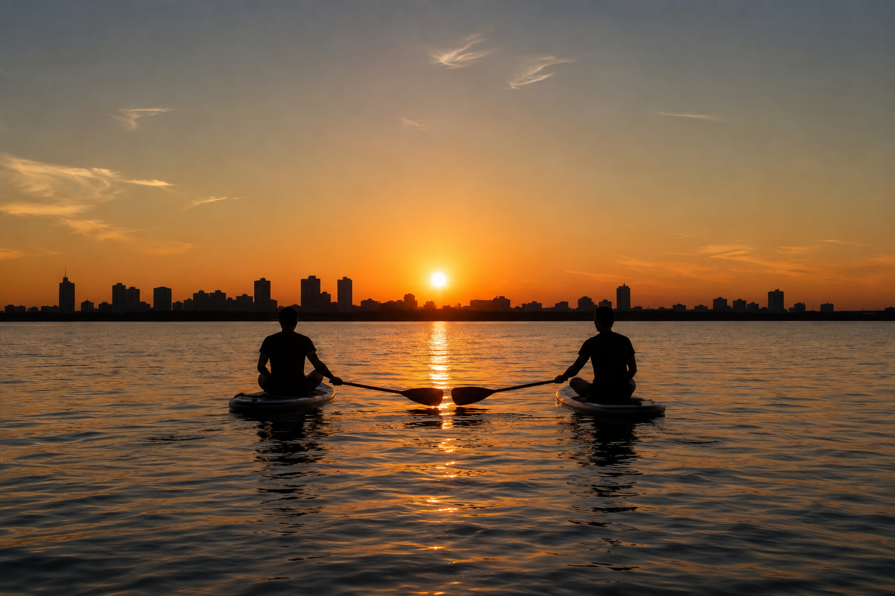

Проплывая мимо других райдеров, всегда приятно поздороваться и поднять друг другу настроение. Но тянуться рукой — неудобно, а подплывать слишком близко — небезопасно для баланса.

Самый простой и удобный способ — просто вытянуть весло в сторону и сделать движение, будто даешь «пять» веслом встречному сапбордисту!
Как это делать:
- Продолжайте движение: Гребите ровно, сидите или стоите — менять позу или сомневаться в балансе не нужно.
- Вытяните весло: Когда проплываете мимо, просто протяните весло вбок навстречу другому сапбордисту.
- Поздоровайтесь: Сделайте легкое движение веслом, будто даете «пять», и скажите обычное приветствие — «Салам!», «Привет!», «Здорово!» или «Добрый вечер!».
Почему это удобно:
- Сохраняем баланс: Не нужно тянуться руками и рисковать упасть в воду.
- Безопасная дистанция: Доски не сталкиваются и свободно плывут дальше по своим маршрутам.
- Просто и позитивно: Отличный способ проявить уважение и поделиться хорошим настроением на воде.